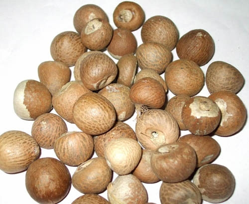

English,letin- Areca/Betel Tree, Areca Catechu
हिन्दी, मराठी, गुजराती, पंजाबी, बंगाली, नेपाली- सुपारी, सोपारी
संस्कृत- पुंगीफालम
आसामी- गुवा, तामोल
कन्नड- आदिके कांगु
कोंकनी- कोप्पल
मलयालम- अदक्का
तमिल- पाक्कु
तेलुगु- पोका वाक्का
उदूँ- छलिया सुपारी
फारसी- कुफेल
सुपारी के पेड भारत, बांग्लादेश, मलेशिया, ताईवान, फिलीपाईन्स आदि देशो मे ज्यादा पाये जाते है,
सुपारी के पेड 20m. तक ऊंचे होते है तथा उसके तना का डायामीटर 10-15cm. तक होता है,
सुपारी को पानी मे घिसकर त्वचा पर लगाने से खाज-खुजली, विसपँ जैसे चमँरोगो मे लाभ होता है,
लगभग 5g. कच्ची सुपारी को पीसकर 7-14ml. जंबारी के रस मे मिलाकर पीने से पेट के कीडे मर जाते है,
सुपारी को जलाकर उसकी राख का मंजन करने से दांत-मसूडों के सभी रोग मिट जाते है,
10-10g. सुपारी और बडी ईलायची को जलाकर उसकी राख मुंह मे छिडकने से मुँह के सभी रोग मिटते है,
10g. सुपारी को 100ml. पानी मे उबालकर आघा पानी शेष रहने पर उसे छानकर पीने से आमाशय और आंतो की कमजोरी के कारण होनेवाले दस्त बंघ हो जाते है,
सुपारी और हल्दी की समान मात्रा लेकर बनाया गया चूणँ मे शक्कर मिलाकर 2g. की मात्रा मे लेने से ज्यादा उल्टी होना बंघ हो जाता है,
1-1g. जल सुपारी का चूणँ, फिटकरी और कत्था, 2g. सेलखडी लेकर सभी को पीसकर उसका पाउडर बनाकर मसूडो पर मलने से उनके सभी रोग मिटते है,
चिकनी सुपारी को पानी मे घिसकर नाभि पर लगाने से नाभि का पकना, उसमे से खून तथा पीब निकलना बंघ हो जाता है,
सुपारी और ईन्द्रायण की जड का चूणँ मिलाकर खाने से श्वेत कुष्ठ रोग मे लाभ होता है,
50g. सुपारी की राख मे 150g. खडिया मिलाकर दंतमंजन करने से दांत चमकदार और मजबूत बनते है,
सुपारी और कत्था को समभाग मे मिलाकर उसके पाउडर से दंतमंजन करने से भी दांतो के सभी रोग मिटते है,
सुपारी का चूणँ उपदंश के घाव पर बूरकने या लगाने से घाव ठीक हो जाता है,
सुपारी की राख को तिल के तेल मे मिलाकर खुजली पर लगाने से लाभ होता है,
आघी सुपारी का चूणँ सेवन करने से आमातिसार मे लाभ होता है,
सिफँ सुपारी की राख से दंतमंजन करने से भी दांतो के रोगो मे लाभ होता है..........